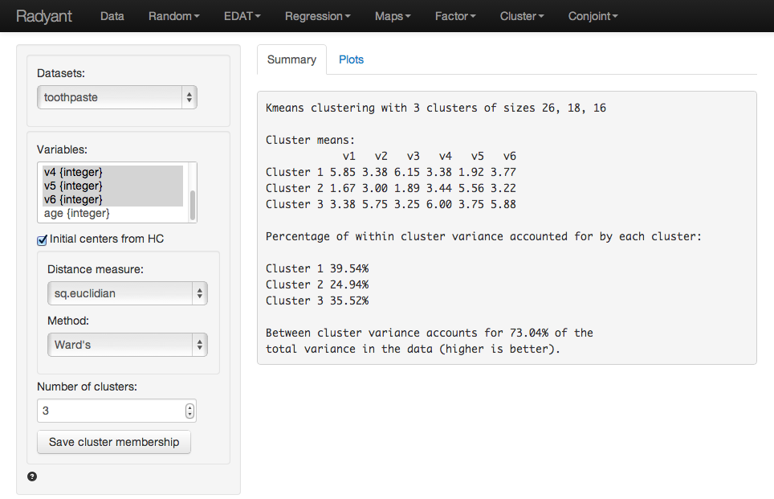
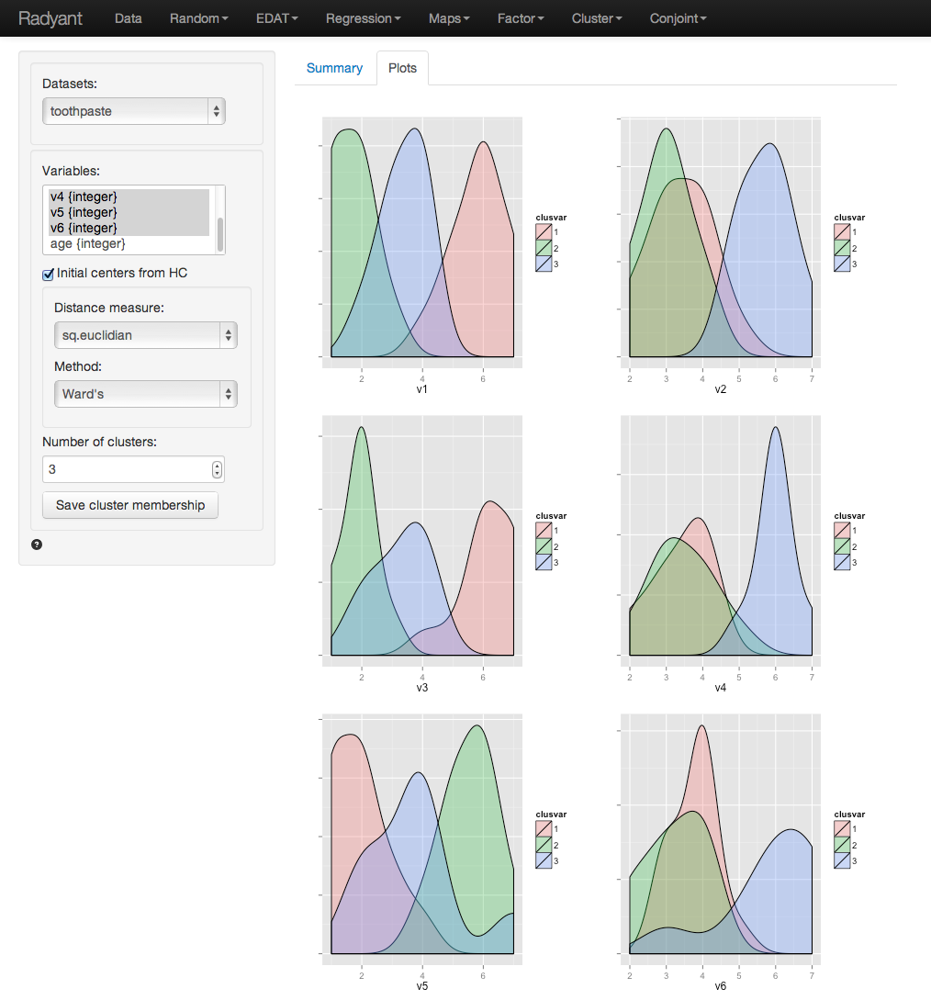
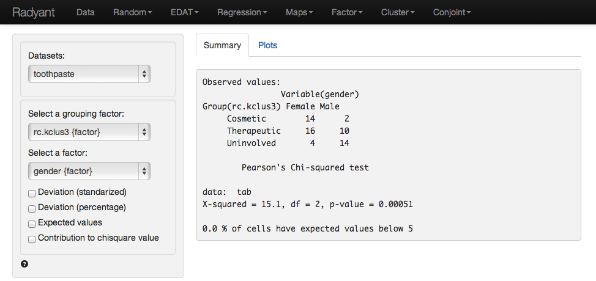
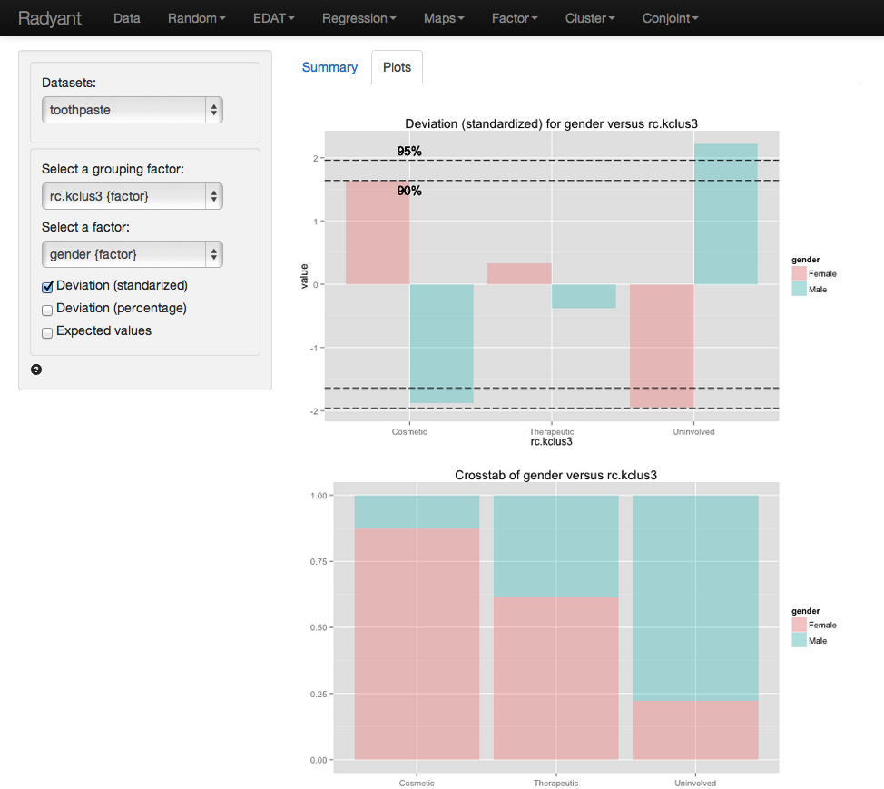

The goal of Cluster Analysis is to group respondents (e.g, consumers) into segments based on needs, benefits, and/or behavior. The tool tries to achieve this goal by looking for respondents that are similar, putting them together in a cluster or segment, and separating them from other, dissimilar, respondents. The researcher will then compare the segments and provide a descriptive label for each (i.e., a name).
Click the 'examples' radio button on the Data > Manage page and click 'Load examples' then choose the toothpaste data from the Datasets dropdown. The data set contains information from 60 consumers who were asked to respond to six questions to determine their attitudes towards toothpaste. The scores shown for variables v1-v6 indicate the level of agreement with the statement indicated on a 7-point scale where 1 = strongly disagree and 7 = strongly agree.
Once we have determined the appropriate number of clusters to extract using Hierarchical cluster analysis we use K-means to create the final segments. The main advantage of this algorithm is it's flexibility and robustness in finding the most appropriate grouping of respondents. Using Hierarchical cluster analysis to select the number of segments, followed by K-means cluster analysis to create the final segments is the default method to cluster data in marketing.
The goal of Cluster Analysis is to group respondents (e.g, consumers) into segments based on needs, benefits, and/or behaviors. The tool tries to achieve this goal by looking for respondents that are similar, putting them together in a cluster or segment, and separating them from other, dissimilar, respondents. The researcher will then compare the segments and provide a descriptive label for each (i.e., a name).
To apply K-means to the toothpaste data select variables v1 through v6 in the Variables box and select 3 as the number of clusters. In the Summary tab we use the table of ‘Cluster means’ to describe the individuals assigned to a segment. Each number in the table shows the average score for people in that segment for a variable. For example, segment 3 has an average score of 5.75 out of 7 on question v2. We are looking for either very high or very low mean values to help distinguish segments because we want to establish how one segment differs from the other segments. If there are no substantial differences in the mean value of a variable across different segments we conclude that variable is not very useful. By highlighting the variables that most clearly distinguish the different segments we can generate a name or label for the segment that describes who they are and where the segments differ from oneanother.

It can be useful to visualize how well the segments are separated by plotting the data for each segment and variable. The figures shown are density plots. For variable v1 the clusters are nicely separated. The average response to the question 'It is important to buy a toothpaste that prevents cavities.' for segment 2 (green) is lower than for both segment 3 (blue) and segment 1 (pink). Segment 1, in turn stands out by it's high score on this question compared to the other two segments. For question v4 we see a different pattern. The average response to the question 'I prefer a toothpaste that freshens breath.' for segments 1 (green) and 2 (pink) is very similar as the plots are mostly overlapping. Segment 3 (blue), in turn stands out by it's high score on this question compared to the other two segments.

By reviewing the Cluster means table in the Summary tab and the density plots in the Plots tab we can derive the following labels: Segment 3 stands out with high scores on questions v2, v4, and v6. We could call them the 'Cosmetic brushers'. Segment 1 stands out with high scores on questions v1 and v3 and a low score on v5. As the clearly care a great deal about the health benefits of toothpaste we might call them the 'Therapeutic brushers'. Segment 2 scores low in v1 and v3 and high on v5, i.e., the care little about the health benefits of toothpaste. Since their scores for their scores for the cosmetics benefits are not high either but rather middle-of-the-road we could label them the 'Uninvolved brushers'.
Once we have categorized the segments we can create a segment or cluster membership variable by clicking the 'Save cluster membership'. A new variable is added to the toothpaste data showing which respondents were assigned to which cluster (i.e., cluster membership). We can change the created cluster variable to show the descriptive labels above through the Data > Transform menu. Select the kclus3 variable in the Select column(s) box. Then from the Transform type dropdown select Recode. In the recode box type (or paste) the command below to recode and press return:
1 = 'Therapeutic'; 2 = 'Uninvolved'; 3 = 'Cosmetic'
We can profile these segments with demographic data using cross-tabs (e.g., gender vs segment membership). Go to EDAT > Cross-tabs. Our null hypothesis is:
There is no relationship between gender and segment membership
Alternative hypothesis:
There is a relationship between gender and segment membership
In the summary tab we see there is a significant association between these two variables. The p-value is smaller than .001 and there are no cells with expected values below 5.

For a more detailed view of the association we go to the Plots tab. Select the 'Deviation (standardized)' plot. The ‘Uninvolved’ segment has more men than we would expect under the null of no-association. If we are willing to use an alpha value of .10 we could also state that the ‘Cosmetics’ segment is composed of more women than we would expect under the null of no-association. In sum, in these data men are more likely to be in the 'Uninvolved brushers' segment and women are more likely to be in the 'Cosmetic brushers' segment.
